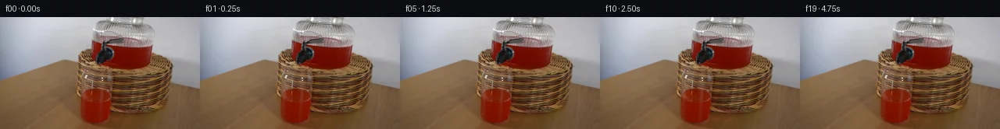

![首帧]()

Round 00
2026-11-05T16:56:47.458781+00:00像素候选变化代码 +418/−0inspection 更新
pixels 5b9e0d1684f4d37f · code 1520e78fd9c9af2a
查看本轮 generate.py 真实 diff
--- previous/generate.py
+++ current/generate.py
@@ -0,0 +1,418 @@
+"""
+generate.py — PixelWorld-Text frame generator for case_0069.
+
+Scene: A glass beverage dispenser filled with bright red liquid sits on a woven
+basket, its spigot poised above a half-filled glass. Over 5 seconds (20 frames
+at 4 fps), a single drop of red liquid falls from the spigot into the glass,
+creating ripples that propagate outward and then settle.
+
+Method: Pure Python pixel manipulation on the 256×144 RGB uint8 first_frame.
+No external AI models, no network, no subprocess engines. All physics (drop
+formation, free-fall, impact, splash particles, concentric ripples) are encoded
+as explicit per-frame pixel copy/paint/blend operations.
+"""
+
+import numpy as np
+from PIL import Image
+import os
+
+# ── paths ──────────────────────────────────────────────────────────────────
+WORKSPACE = os.path.dirname(os.path.abspath(__file__))
+FRAME0_PATH = os.path.join(WORKSPACE, "first_frame.png")
+FRAMES_DIR = os.path.join(WORKSPACE, "frames")
+TMP_DIR = os.path.join(WORKSPACE, ".tmp")
+NPZ_PATH = os.path.join(WORKSPACE, "pixels.npz")
+
+H, W = 144, 256
+N_FRAMES = 20
+
+# ── scene geometry (pixel coords, measured from first_frame.png) ──────────
+# Spigot opening centre, determined by darkest-pixel analysis
+SPIGOT_CX = 136 # column of spigot centre
+SPIGOT_CY = 55 # bottom row of spigot dark region ≈ nozzle tip
+
+# Liquid surface in the glass below the spigot
+SURFACE_Y = 57 # first sustained bright-red row below spigot
+SURFACE_LEFT = 122 # left edge of liquid surface in glass
+SURFACE_RIGHT = 190 # right edge
+
+# Gap from spigot tip to liquid surface (pixels)
+GAP = SURFACE_Y - SPIGOT_CY # ≈ 2 px
+
+# Drop radius (pixels)
+DROP_R = 2
+
+# ── helper: load and verify first frame ────────────────────────────────────
+def load_first_frame():
+ """Load first_frame.png, return uint8 (H,W,3) numpy array."""
+ img = Image.open(FRAME0_PATH)
+ assert img.size == (W, H), f"Expected {W}×{H}, got {img.size}"
+ assert img.mode == "RGB", f"Expected RGB, got {img.mode}"
+ arr = np.array(img, dtype=np.uint8)
+ return arr
+
+# ── palette helpers ────────────────────────────────────────────────────────
+def red_liquid_color(brightness=1.0):
+ """Return an (R,G,B) uint8 tuple for red liquid at given brightness."""
+ # Sample from the actual liquid in first frame – typical bright red
+ # Base: bright red ~ (120, 25, 5)
+ r = int(np.clip(125 * brightness, 0, 255))
+ g = int(np.clip(25 * brightness, 0, 255))
+ b = int(np.clip(5 * brightness, 0, 255))
+ return np.array([r, g, b], dtype=np.uint8)
+
+def blend_over(dst, src, alpha):
+ """Alpha-blend src over dst in-place. dst, src are uint8."""
+ return np.clip(dst * (1 - alpha) + src * alpha, 0, 255).astype(np.uint8)
+
+# ── frame 0 (exact copy) ──────────────────────────────────────────────────
+def make_frame_0(base):
+ return base.copy()
+
+# ── drop formation (frames 1–4) ───────────────────────────────────────────
+def paint_drop(base, t):
+ """
+ Paint a pendant drop at the spigot tip.
+ t: normalised time within drop-formation phase [0, 1].
+ t=0 → no drop; t=1 → fully-formed hanging drop about to detach.
+ """
+ frame = base.copy()
+ cy = SPIGOT_CY
+ cx = SPIGOT_CX
+
+ # Drop grows from a tiny bulge into a teardrop
+ drop_radius = 1.0 + t * 1.5 # 1 → 2.5 px
+ drop_elongation = 1.0 + t * 2.0 # vertical stretch
+
+ for dy in range(-3, 5):
… diff truncated; 331 more lines …